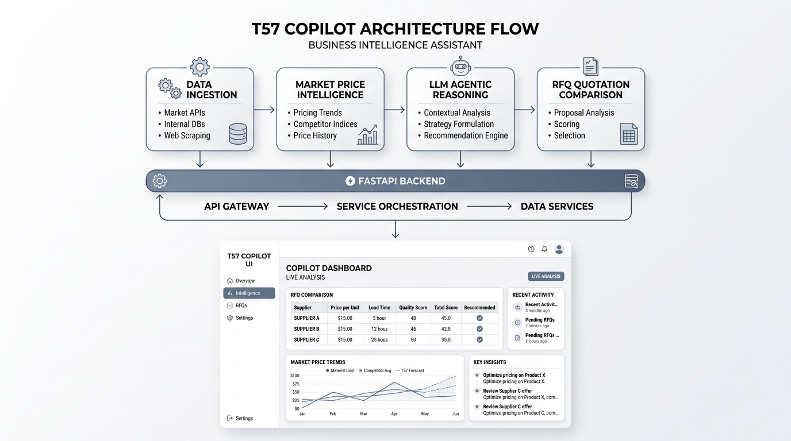

Enterprise AI Platform

AI-Powered Trade & Product Intelligence Platform
Contributed to a comprehensive AI-driven trade intelligence platform for global B2B, B2G, and G2G ecosystems, automating product discovery and content generation.
Problem: Manual product onboarding and unstructured catalog descriptions were slowing trade transaction velocity.
My Role: Engineered LLM-driven product description generators, automated SEO summaries, and scalable web scraping pipelines for downstream ML models.